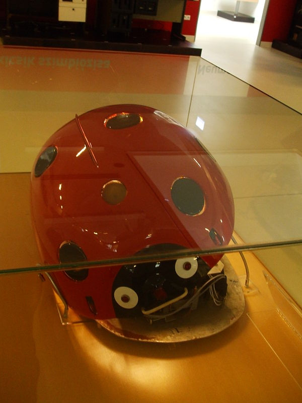

A szegedi katicabogarat Muszka Dániel tervezte és építette 1956-57-ben. Muszka Dániel Király József pszichológus ötletéből kiindulva építette meg Katicabogarát, a pavlovi feltételes reflexek modellezése céljából.

A katica elején három darab érzékelő található: ha a középsőbe világítunk, akkor előre mozog, ha a bal oldaliba, akkor balra fordul, ha a jobb oldaliba, akkor jobbra fordul. A katica hangra is reagál, ekkor a szemei elkezdenek világítani.
A katicát be lehet tanítani arra, hogy ne csak fényre, hanem hangra is mozogjon. Ezt úgy lehet elérni, hogy a két ingert (a fényt és a hangot) egyszerre adjuk neki. A katica egy idő után elfelejti, hogy hangra is mozogjon.
Amennyiben a katica hét pettye közül valamelyiket megnyomjuk, akkor a katica elkezd sivítani, és nem reagál sem fényre, sem hangra. Ugyanez történik, amennyiben a katica elején található orr-érzékelő nekiütközik valaminek. A katica egy idő után 'megnyugszik' és újra reagál fényre és hangra is, valamint újra be lehet tanítani arra, hogy hangra is mozogjon.
Forrás: Wikipédia